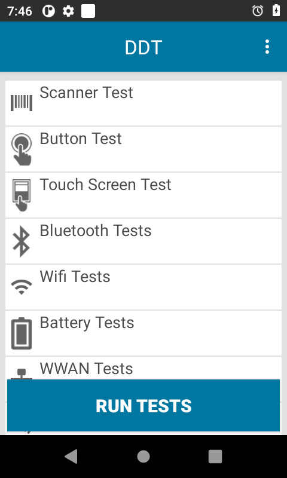

Panoramica
Device Diagnostic Tool supporta due modalità operative:
- Modalità Amministratore - L'amministratore può accedere alle impostazioni dell'app, modificare le configurazioni dei test ed eseguire i singoli test. Questa è la modalità predefinita.
- Modalità Utente – L'utente è autorizzato esclusivamente all'esecuzione dei test; non è previsto l'accesso alle impostazioni dell'app, alle configurazioni dei test o ai singoli test. Per impostare la modalità Utente, disabilitare admin_mode come descritto nella sezione Configurazione.
Avvio dell'app
Per eseguire Device Diagnostic Tool si può adottare uno dei seguenti metodi:
- Manualmente, mediante l'interfaccia utente - L'utente avvia Device Diagnostic Tool ed esegue manualmente i test. Consultare la seguente sezione Interfaccia utente.
- Da remoto, con un sistema EMM (Enterprise Mobility Management) - Avviare Device Diagnostic Tool in background e generare un log con il comando:
adb shell am broadcast -n "com.symbol.selfdiagnostics/com.symbol.selfdiagnostics.SESReceiver"
Per avviare Device Diagnostic Tool è necessario adottare solo uno dei metodi descritti, altrimenti si potrebbero verificare risultati inattesi.
Test dispositivo
Al primo avvio dell'app, la schermata principale visualizza i test eseguibili:
|  |
Schermata principale
Se sono già stati eseguiti dei test, il nome del test è seguito dalla data dell'ultima esecuzione.
Toccando Esegui test sulla schermata principale vengono eseguiti tutti i test. La procedura di esecuzione si basa sui test selezionati nella schermata Configura test. Quando si avvia un test, l'utente viene invitato a eseguire ulteriori azioni, quali: prova scanner, prova pulsanti, prova touch screen e prova audio. Si consiglia di eseguire tutti i test durante l'uso normale del dispositivo, non quando è inserito in un alloggiamento o collegato a un computer tramite cavo USB. Una volta concluso il test, vengono visualizzati i risultati:
 Riuscito - Il test è stato superato. Il risultato rientra nei parametri nominali.
Riuscito - Il test è stato superato. Il risultato rientra nei parametri nominali.
Fallito - Il test non ha soddisfatto i parametri nominali.
 Informazioni - Dati acquisiti e visualizzati.
Informazioni - Dati acquisiti e visualizzati.
In alternativa, in modalità Amministratore è possibile eseguire singoli test toccando la categoria desiderata e quindi toccando Esegui test.
I test non superati e scaduti sono contrassegnati con la stessa icona di pericolo.
Per accedere alla Guida, toccare il menu nell'angolo superiore destro della schermata principale. Verrà visualizzato il portale dell'assistenza Device Diagnostic Tool.
Test scanner
L'utente viene invitato a eseguire la scansione di un codice a barre. Risultati
- Test scanner – visualizza i dati del codice a barre
- Tipo di etichetta – visualizza il tipo di codice a barre o il decodificatore oggetto della scansione
Nota: quando si esegue uno Test scanner sul modello TC55, l'utente deve premere a lungo il pulsante dello scanner, affinché il dispositivo lo rilevi.
Test pulsanti
L'utente viene invitato a premere i pulsanti fisici presenti sul dispositivo: grilletto di scansione (lato sinistro o destro), push-to-talk, aumento e riduzione del volume. Risultati
- Test pulsanti – test riuscito, test non superato o test scaduto
Nota: se si esegue una nuova mappatura dei pulsanti fisici il comportamento del Button Test potrebbe risentirne.
Test touch screen
L'utente è invitato a toccare ogni riquadro della griglia dello schermo
- Test touch screen – test riuscito, test non superato o test scaduto
Test Bluetooth
Verifica la funzionalità della radio Bluetooth e restituisce informazioni relative al sistema Bluetooth. Risultati
- Nome – visualizza il nome della rete Bluetooth
- Ciclo di alimentazione radio – test riuscito o test non superato. Lo stato della radio viene mantenuto alle condizioni precedenti a questa prova.
- Funzionante/Non funzionante – funzionante o non funzionante
- Rilevabile/Collegabile – collegabile, rilevabile o no
Test Wi-Fi
Verifica la funzionalità della radio Wi-Fi e restituisce informazioni relative al sistema Wi-Fi. Risultati
Indirizzo MAC – valido o non valido
Test di rete – indica se la radio è connessa o non connessa. Il test non riesce se il sistema Wi-Fi non è connesso ad alcuna rete. Lo stato della radio viene mantenuto alle condizioni precedenti a questa prova. Se il test va a buon fine, vengono visualizzati i seguenti valori:
- potenza – indica la potenza del segnale
- ip – visualizza l'indirizzo IP
- bssid – valido o non valido
- velocità – visualizza la velocità di connessione
Test batteria
Verifica lo stato della batteria e restituisce informazioni relative alla batteria stessa. Risultati
- Codice prodotto – visualizza il codice articolo
- Numero di serie – visualizza il numero di serie
- Data di fabbricazione – visualizza la data di fabbricazione della batteria
- Decommission status (Stato di decommissioning) – visualizza lo stato di salute della batteria, ossia:
- Buono – la batteria è in ottime condizioni
- Need to replace battery (Sostituire la batteria) – il numero di cicli di carica della batteria ha raggiunto il Valore soglia batteria impostato ed è quindi necessario sostituire al più presto la batteria.
- Sconosciuto – indica un problema nel recupero delle informazioni in merito alle condizioni della batteria
- Tensione – visualizza la tensione
- Corrente – visualizza la corrente
- Temperatura – visualizza la temperatura
- Livello – visualizza il livello di carica rimanente della batteria sotto forma di percentuale (%)
- Capacità corrente – visualizza la quantità di energia presente nella batteria in mAh (milliampere per ora). Questa informazione è disponibile solo per le batterie PowerPrecision+.
Test WWAN
Verifica la funzionalità della radio WWAN e restituisce informazioni relative al sistema WWAN. Risultati
- Stato SIM – È necessario disattivare la modalità aereo. Visualizza uno dei seguenti valori:
- Presente – La scheda SIM è installata
- Assente – La scheda SIM non è installata
- Stato servizi vocali - Visualizza uno dei seguenti valori:
- Servizi vocali attivi
- Servizi vocali non attivi
- Solo servizi vocali di emergenza
- Spegnimento mediante voce
- Servizi vocali sconosciuti
- Stato dati – Visualizza uno dei seguenti valori:
- Connessione dati attiva
- Connessione dati non attiva
- Connessione dati in corso
- Connessione dati sospesa
- Dati sconosciuti
- Tipo di WWAN – visualizza il tipo di rete, ad esempio: LTE, 2G, 3G, 4G o Non disponibile
- Potenza segnale – Visualizza uno dei seguenti valori:
- Non disponibile - Scheda SIM assente
- Sconosciuta – il dispositivo potrebbe essere in modalità aereo
- Potenza segnale - in dBm
- Numero di telefono – valido o non valido, a seconda che il numero di telefono sia stato o meno reso noto dal gestore del servizio.
- ID dispositivo – valido o non valido, a seconda che l'ID del dispositivo sia stato o meno reso noto
Test audio
Verifica la funzionalità del microfono e degli altoparlanti del dispositivo. Risultati
- Test audio – test riuscito o test non superato
Test scheda SD
Verifica lo stato della scheda SD e ne visualizza le informazioni. La scheda SD deve essere montata per essere rilevata. Risultati
- Scheda SD - presente o assente
- Lettura - test superato o non applicabile
- Scrittura - test superato o non applicabile
- Spazio totale - quantità totale di spazio sulla scheda SD in GB, oppure non disponibile
- Spazio libero - quantità totale di spazio libero sulla scheda SD in GB, oppure non disponibile
Carica registri
Il file di configurazione e i file di registro possono essere caricati in qualsiasi momento dal dispositivo a un server FTP. I file caricabili sono: registri dei risultati dei test, configuration.xml, registro cronologia e registro di stato. Per accedere a questa funzione, nella schermata principale dell'app toccare il menu delle opzioni in alto a destra, quindi selezionare Carica.
Opzioni della schermata Carica:
- Protocollo - FTP (valore predefinito), unica opzione disponibile
- Indirizzo IP - specificare l'indirizzo IP del server FTP (obbligatorio)
- Nome utente - specificare il nome utente per l'accesso al server (obbligatorio)
- Elimina file dal dispositivo - se questa opzione è attivata, tutti i file (di configurazione e di registro) vengono cancellati dal dispositivo dopo che sono stati caricati.
Se sono stati inseriti i Dettagli server nella schermata Impostazioni, queste opzioni vengono compilate automaticamente, ma possono essere modificate se necessario.
Dopo aver inserito le informazioni richieste, toccare Carica. Inserire la password FTP quando viene richiesta. Se l'operazione ha esito positivo, i file vengono caricati in un file .zip con il formato DDTLOG_[TimeStamp(ddMMyyyyHHmmss)]_[device_identifier].zip, dove
- [TimeStamp(ddMMyyyyHHmmss)] è il marcatore data/ora che comprende: 2 cifre per il giorno, 2 cifre per il mese, 4 cifre per l'anno, 2 cifre per l'ora, 2 cifre per i minuti e 2 cifre per i secondi.
- [device_identifier] è l'identificativo univoco del dispositivo, che può essere uno dei dati seguenti a seconda della piattaforma Android:
- UUID - in dispositivi con Android 10 e versioni successive
- Numero di serie - in dispositivi con Android Oreo e versioni precedenti
Programmazione dei lavori
È possibile programmare l'esecuzione dei test dispositivo per un orario specifico. Una volta programmato, un lavoro si ripete automaticamente alla stessa ora con frequenza settimanale. Se non si desidera che venga ripetuto, è possibile eliminarlo dopo che è stato completato. È possibile programmare solo i test dispositivo che non richiedono l'intervento dell'utente. Quando un lavoro programmato è stato completato, viene registrato in /storage/emulated/0/Android/data/com.symbol.selfdiagnostics/files/history.log.
Per programmare un lavoro:
- Nella schermata principale dell'app, toccare il menu delle opzioni in alto a destra, quindi selezionare Pianificazione lavori.
- Nella schermata Pianificazione lavori, toccare "+" per creare un lavoro.
- Selezionare l'orario di esecuzione in ore/minuti.
- Selezionare il test dispositivo da eseguire.
- Selezionare il giorno della settimana in cui eseguire il test.
- Toccare l'icona di salvataggio in alto a destra.
Per modificare un lavoro già programmato:
- Nella schermata Pianificazione lavori, toccare un lavoro programmato nel relativo elenco.
- Apportare le modifiche necessarie.
- Toccare l'icona di salvataggio in alto a destra.
Per eliminare un lavoro già programmato:
- Nella schermata Pianificazione lavori, toccare un lavoro programmato nel relativo elenco.
- Toccare l'icona del cestino in alto a destra.